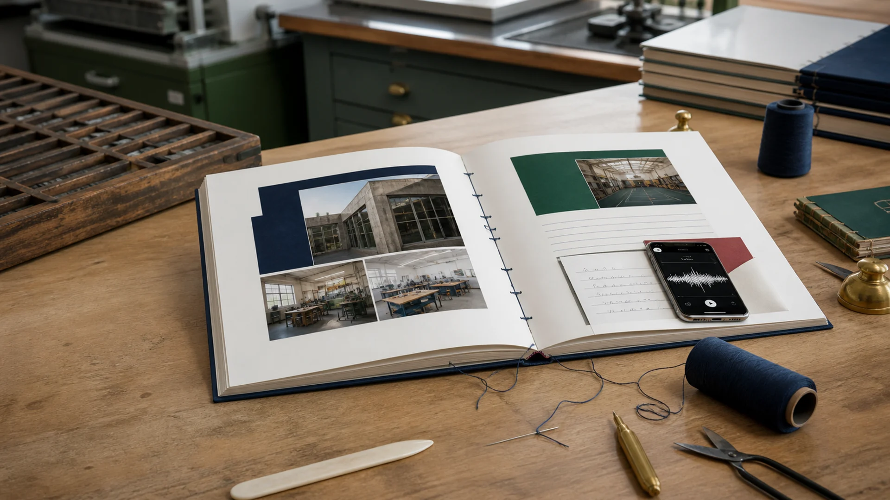
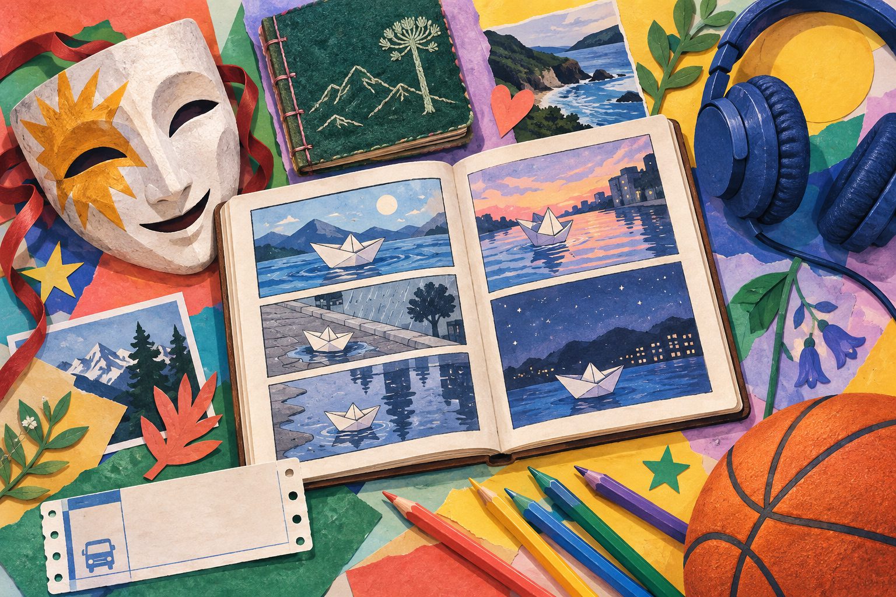
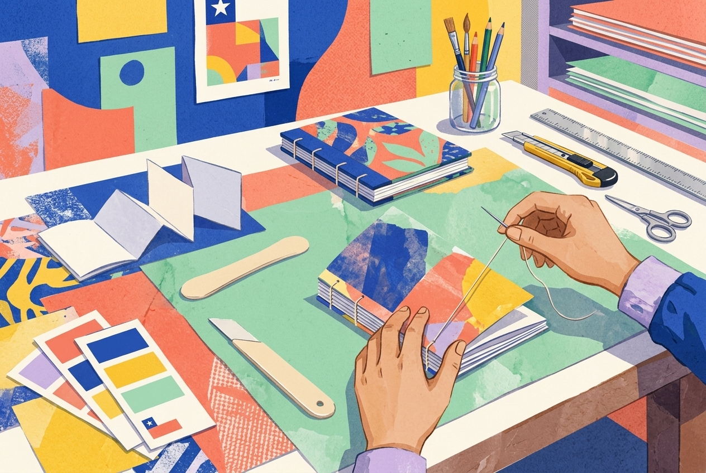
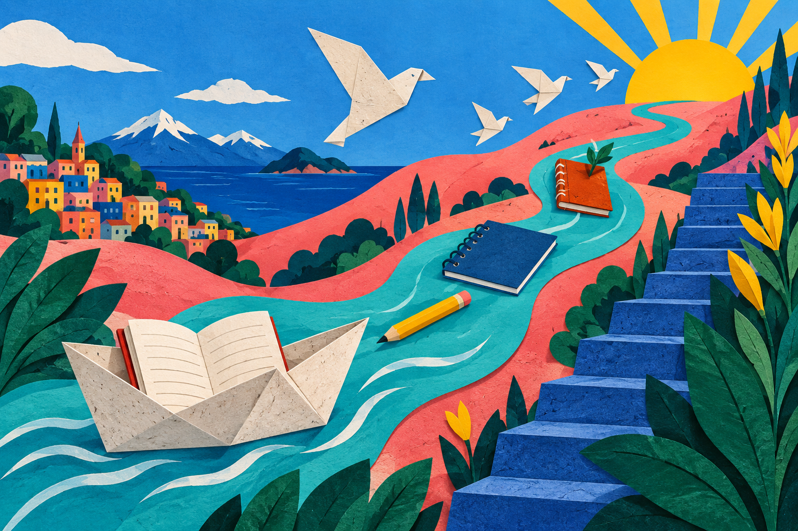

Una lista informa
“Hicimos un cartel. Trabajamos en grupos. Después lo presentamos.”
Sabemos qué pasó, pero no podemos imaginarlo ni comprender por qué importa.Anuario 2026 · 4°D TP · Taller de escritura
Aprenderás cómo se construyen una memoria escolar, un proyecto de especialidad y un cierre personal. Después escribirás uno de ellos en tu anuario.

“Hicimos un cartel. Trabajamos en grupos. Después lo presentamos.”
Sabemos qué pasó, pero no podemos imaginarlo ni comprender por qué importa.“El cartel seguía sobre la mesa cuando comenzaron las actividades. Al probarlo desde el patio descubrimos que las letras no se leían.”
Aparece una escena, una dificultad y una decisión.Personas, lugar, momento y acción.
Una dificultad, una decisión o una imagen.
Lo que aprendiste o lo que esa experiencia representa hoy.

¿Dónde estaban? ¿Qué estaba ocurriendo?
Ordena las acciones y presenta una dificultad o momento decisivo.
Explica qué representa hoy ese recuerdo.
Personas, situación, lugar y año.
Ubica al lector en un momento concreto.
Muestra qué hicieron frente al problema.
Mira el recuerdo desde hoy.


¿Cómo eras o cómo era el curso al comenzar?
¿Qué aprendiste? ¿Qué dificultad te hizo crecer?
Personas, gestos o momentos que quieres conservar.
¿Qué esperas llevar contigo a la etapa siguiente?
Elígela si recuerdas con claridad una experiencia y puedes explicar qué significó.
180–250 palabrasElígelo si puedes describir un trabajo real, sus etapas, una dificultad y lo aprendido.
140–200 palabrasElígelo si puedes reflexionar sobre tus cambios y lo que quieres conservar de esta etapa.
120–180 palabras